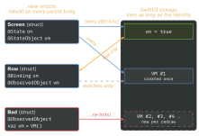

ios-swift · folio
In one line: A view is a cheap struct rebuilt constantly; its state lives outside it in
SwiftUI’s storage, keyed by view identity. The only question each wrapper answers is
who owns the truth: this view (@State, @StateObject) or someone else
(@Binding, @ObservedObject, @EnvironmentObject).
Download PDF Print view LaTeX source

How it works
Viewis a protocol:associatedtype Body: View+@ViewBuilder var body: Self.Body { get }.some Viewis an opaque result type: one concrete type (e.g.VStack<TupleView<(Text, Button<Text>)>>), chosen by the implementation, known to the compiler, hidden from the reader. Not a box, not dynamic — unlikeAnyView, which erases the type and hurts diffing.@State— view-owned source of truth for a value; storage lives in SwiftUI, survivesbodyre-runs; the initial value is used once. Mark itprivate.$x(theprojectedValue) is aBinding.@Binding— not storage: a two-way get/set reference to truth owned elsewhere. Child writes → parent’s@Statechanges → both re-render. Passed as$name;.constant(x)in previews.@StateObject— view creates and owns anObservableObject; the@autoclosureinitialiser runs once per identity, the instance survives struct re-creation.@ObservedObject— object is injected; view only subscribes, does not control lifetime. Initialised inline, it is re-created on every parent redraw.@EnvironmentObject— injected by an ancestor’s.environmentObject(obj), looked up by type at run time; missing = crash.@Environment(\.colorScheme)reads values (\.dismiss,\.scenePhase).- Notification:
@PublishedfiresobjectWillChangebefore the set (whole object). iOS 17@Observable(macro, Observation) tracks each propertybodyread — see the table. @ViewBuilder— a result builder:buildBlockpacks children intoTupleView;if/else→_ConditionalContent(buildEither);ifalone →Optional(buildOptional). That is whybodymay branch but a plain helperfunc -> some Viewmay not (all returns must be one type) — mark it@ViewBuilder.- Identity: structural (position in the tree, which
ifbranch) or explicit (.id(_:),ForEachids). New identity = state destroyed,onAppearagain, transition played. bodyre-runs when something it read changes: a@State/@Bindingvalue, an observed object publishes (or an@Observableproperty it read), an@Environmentvalue, or the parent passes different inputs. Then SwiftUI diffs.
Example
final class VM: ObservableObject { @Published var n = 0 }
struct Screen: View {
@StateObject private var vm = VM() // made ONCE, owned
@State private var on = false // value, owned
var body: some View { // one concrete type
VStack { Toggle("On", isOn: $on) // $on : Binding<Bool>
Row(vm: vm, on: $on) } // hand truth down
}
}
struct Row: View {
@ObservedObject var vm: VM // injected, NOT owned
@Binding var on: Bool // someone else's @State
var body: some View { Button("+") { vm.n += 1; on = true } }
}Structs die, storage stays

| role | ObservableObject | iOS 17 @Observable |
|---|---|---|
| owns it | @StateObject | @State |
| passed in | @ObservedObject | plain let / var |
needs $x.prop | @ObservedObject | @Bindable |
| injected | @EnvironmentObject | @Environment(T.self) |
| provide | .environmentObject(o) | .environment(o) |
| publishes | @Published props | every stored prop (macro) |
| re-renders | every observer, any change | only views that read it |
Traps
@ObservedObject var vm = VM()— created but not owned: each parent redraw allocates a fresh VM, state resets, no warning. Creator:@StateObject.- “
some View= any view / likeAnyView” — no:someis one fixed type; returningTextin one branch andImagein another fails without@ViewBuilder. - “
@Bindingis a copy” — no: it stores nothing; writes go to the owner. Two@Statecopies of one fact = two truths that drift. @Stateholding a plain class: inner mutation leaves the reference equal → no re-render (fine only for an@Observableclass).if c { MyView() } else { MyView() }= two identities → state resets on toggle..id(value)changing often silently nukes state.- Heavy work or network calls in
body— it runs many times; use.task(auto-cancelled on disappear) or.onAppear.
Timeline
Remember
“Who wrote = VM()? That view writes @StateObject.” State / StateObject = mine; Binding / Observed / Environment = borrowed. $ = a pointer to the truth.